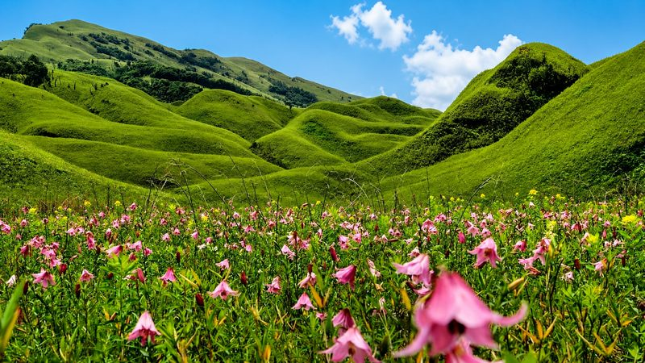
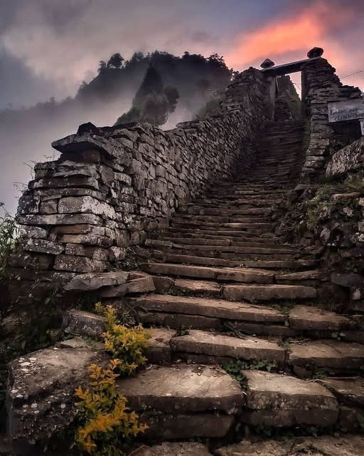
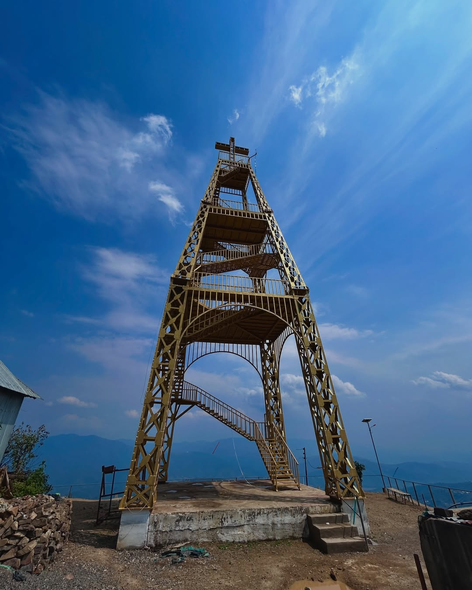
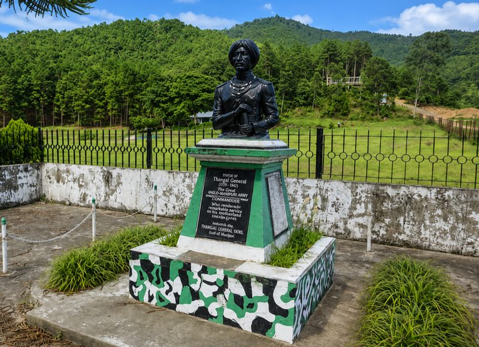

Sweeping meadows, sacred peaks, hanging villages.

Dzükou Valley — "Valley of Flowers"
Renowned for sweeping green meadows, seasonal wildflowers and panoramic mountain views. Trails winding through forests and ridges reward trekkers with an immersive wilderness experience.

Yangkhullen Fortress — "The Hanging Village of Manipur"
Ancient stone fortress architecture with massive stone stairways and bastions, offering spectacular panoramic views of the surrounding valleys.

Watch Tower

Thangal Statue & Willong Khullen

Namai Zo Eco Tourist Park
Into the Wild
Some of the finest trekking experiences lead to Dzükou Valley, winding through forests, ridges, and mountain slopes. Remote villages such as Yangkhullen and scenic locations around Mao offer untouched landscapes and traditional settlements.
People & Living Traditions
Traditions of indigenous communities — Mao, Maram, Poumai, Thangal, Liangmai, Zeme and Rongmei — preserve vibrant cultural practices, oral histories and age-old customs shaping everyday life.